| 1.-Dragon Ball |
apareció inicialmente como un comic japonés o manga escrito e ilustrado por Akira Toriyama. Fue publicado originalmente en la revista Shōnen Jump, de la editorial japonesa Shūeisha, entre los años 1984 y 1995. Luego de varios años se realizaron las producciones de animes también con gran éxito. |
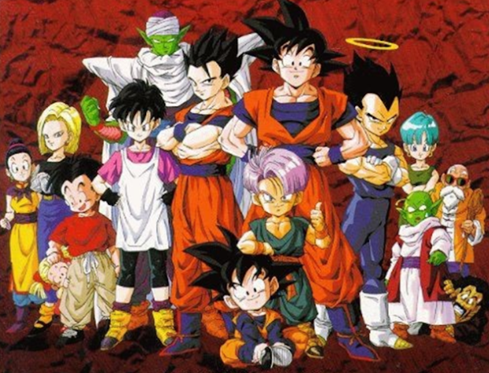 |
| 2.-Naruto |
Naruto se inició como una serie de manga con textos e ilustraciones de Masashi Kishimoto en 1999. Fue publicado como manga por la editorial Shūeisha en la revista semanal japonesa Shōnen Jump, y su gran éxito entre el público joven hizo que fuera adaptada también para la televisión.
El anime se empezó a transmitir en 2002 por la cadena televisiva TV Tokyo y tuvo luego una gran trascendencia a nivel internacional.
La trama de Naruto relata la historia de un adolescente ninja llamado Naruto Uzumaki que es huérfano de padres que fallecieron ante el ataque del Zorro Demonio de Nueve Colas. El adolescente aspira a convertirse en un Hokage, un líder reconocido en la aldea. |
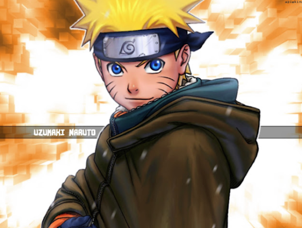 |
| 3.-Los Caballeros del Zodíaco |
Saint Seiya conocida en muchos países como Los Caballeros del Zodiaco, es una serie de manga con textos e ilustraciones de Masami Kurumada.
Se inició en 1985 como manga en la revista Shūkan Shōnen Jump de la editorial Shūeisha y luego se adaptó a la televisión como anime con gran suceso.
El éxito de Los Caballeros del Zodiaco ha dado lugar a diversas adaptaciones como precuelas y secuelas de la serie, remix, películas animadas y videojuegos entre otras.
El argumento de la serie trata acerca de un grupo de jóvenes guerreros que son denominados los “santos o «caballeros» dentro de los cuales hay un notorio líder que es Seiya, el caballero que porta la armadura de Pegaso. |
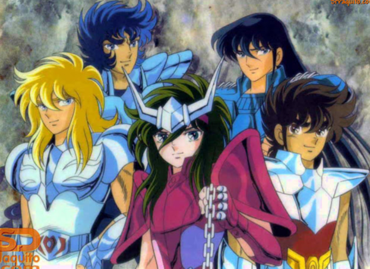 |
| 4.-One Piece |
One Piece es uno de los mangas más populares de todos los tiempos. Fue escrito e ilustrado por Eiichirō Oda. Se empezó a publicar en la revista japonesa Weekly Shōnen Jump en 1997 y se han publicado 101 volúmenes batiendo record de ventas.
La adaptación al anime también fue exitosa tanto que está considerado entre los mejores animes de todos los tiempos según los distintos rankings de los conocedores del género. |
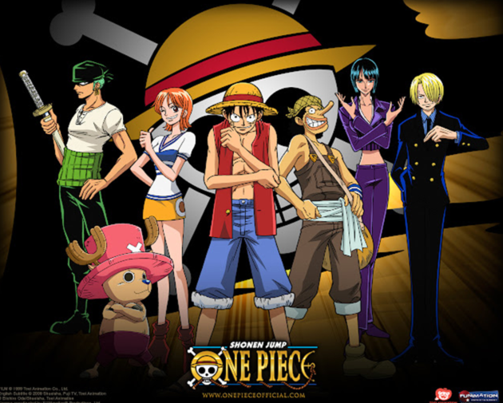 |
| 5.-Pokémon |
El término Pokemon está referido a una especie de abreviatura de Pocket Monsters lo que en español significa Monstruos de bolsillo.
En este caso, la serie de TV tal como la conocemos no se basa en un manga como tradicionalmente sucede con las producciones japonesas.
Todo empieza con el éxito de la saga de los videojuegos Pokemon, a partir de allí se adapta el mismo año la trama a los dibujos o animes producidos por la compañía OLM, Inc y se da inicio a las transmisiones por la cadena TV Tokyo en abril de 1997.
El éxito de Pokemon fue impresionante con una primera temporada de 276 capítulos. La popularidad del anime no solo se dio en Japón sino que se extendió a muchas partes del mundo, razón por la cual la franquicia aprovechó para hacer luego, el manga, varias películas y otras producciones. |
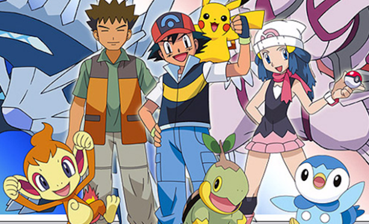 |
| 6.-Neon Genesis Evangelion |
Esta serie de tan solo 26 episodios se estrenó en octubre de 1995 y dejó una gran impresión entre los aficionados del anime mecha.
Cuando unos seres malignos descienden a la Tierra para destruir a la humanidad, Shinji, un chico de 14 años, se une a un reducido escuadrón de pilotos bajo el mando de su padre del que estaba distanciado. Para tal fin, dicho escuadrón utiliza máquinas y robots gigantes que parecen tener mente propia. |
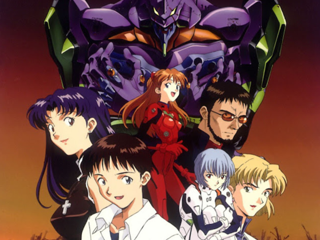 |
| 7.-Transformers |
Transformers es una franquicia de entretenimiento que se establece a partir de 1984 basada en la línea de juguetes de Takara Tomy. Luego de la sociedad entre Takara y Hasbro se desarrollan una serie de exitosos proyectos que incluyen los animes, películas, mangas, videojuegos, series, etc.
La trama de Los Transformers está basado en dos tipos de razas de robots: los Autobots y los Decepticons, ambos originarias del planeta Cybertron. |
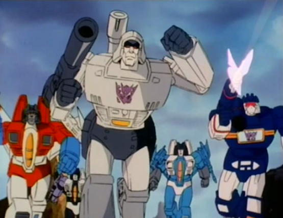 |
| 8.- Doraemon |
Doraemon se inició como un manga escrita e ilustrada por Fujiko F. Fujio, publicado en Japón a fines de 1969. Desde diciembre de 1969.
En 1973 se adaptaría la historia para la televisión, aunque recién a partir de 1979 tendría notorio éxito ya incluso a nivel internacional. Tanto el manga como el anime tuvieron gran aceptación entre el público. |
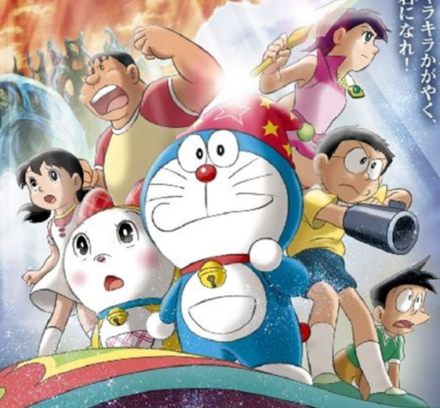 |
| 9.- Sailor Moon |
Esta famosa serie japonesa se inicia como un manga a fines de 1991 con texto e imágenes de Naoko Takeuchi. En esta serie se volvió a popularizar el subgénero de las chicas mágicas y el sentai.
El éxito del manga originó la producción del anime en la cadena de televisión japonesa TV Asahi entre 1992 y 1997 con doscientos capítulos. A partir del éxito de la serie se produjeron también diversas películas animadas, especiales y memoriales. |
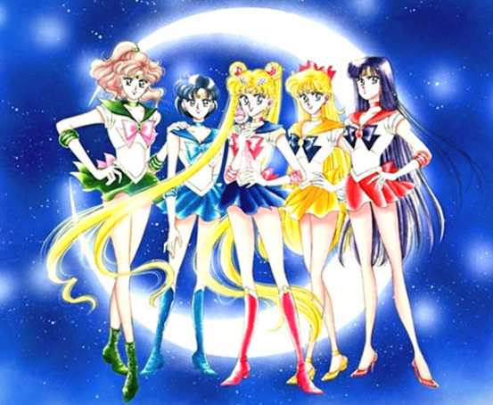 |
| 10.- Candy Candy |
es un exitoso manga japonés de 1975 escrito por Kyōko Mizuki (Keiko Nagita) e ilustrado por Yumiko Igarashi creadoras que tuvieron conflictos legales por los derechos del merchandising de la serie. El anime se inició en 1976 y también tuvo mucho éxito a nivel internacional. Manga y anime tuvieron su conclusión en 1979. |
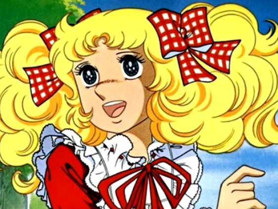 |
| 11.-Bleach |
es una serie de manga y anime escrita e ilustrada por Tite Kubo. La serie narra las aventuras de Ichigo Kurosaki, un joven adolescente de quince años de edad que accidentalmente absorbe los poderes de una shinigami —personificación japonesa del Dios de la muerte |
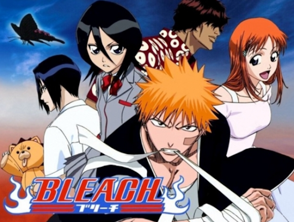 |
| 12.-Yu-Gi-Oh |
es un manga creado por Kazuki Takahashi, que ha dado lugar a una franquicia, además de múltiples series de anime, películas, juegos de cartas y numerosos videojuegos. La publicación comenzó el 30 de octubre de 1996 y finalizó el 8 de marzo de 2004 con treinta y ocho volúmenes. Se trata de uno de los mangas más populares ofrecidos en la revista Weekly Shōnen Jump de Shūeisha. |
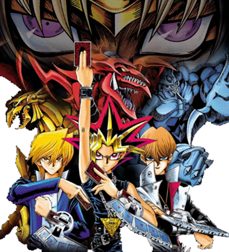 |
| 13.-Ranma 1/2 |
es una serie de manga escrita e ilustrada por Rumiko Takahashi. Se publicó originalmente en la revista Shūkan Shōnen Sunday de la editorial Shōgakukan desde el 19 de agosto de 1987 hasta el 6 de marzo de 1996, organizándose en 38 volúmenes en formato tankōbon. |
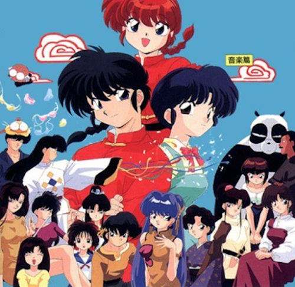 |
| 14.-Inuyasha |
es un manga escrito e ilustrado por Rumiko Takahashi, publicado poŕ primera vez en 1996. Su adaptación al anime, estrenada en el año 2000, fue dirigida por Yasunao Aoki y Masashi Ikeda. |
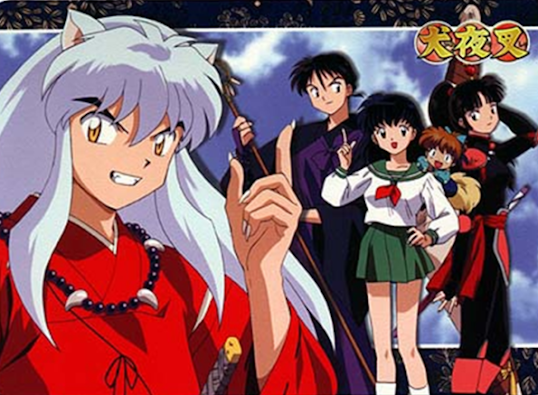 |
| 15.-Fullmetal Alchemist |
Su primera adaptación al anime fue dirigida por Seiji Mizushima y la segunda por Yasuhiro Irie. El mundo de Fullmetal Alchemist tiene un estilo steampunk, similar al de después de la Revolución Industrial europea. En ese universo ficticio en el que la alquimia es una de las técnicas científicas más avanzadas conocidas por el hombre, la historia se centra en los hermanos Edward y Alphonse Elric, quienes quieren restaurar sus cuerpos por medio de la piedra filosofal tras un fallido intento de resucitar a su madre a través de la alquimia. |
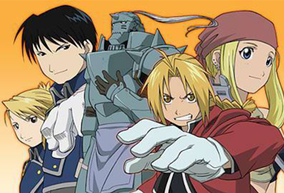 |
| 16.-Yu Yu Hakusho |
es una serie de manga escrita e ilustrada por Yoshihiro Togashi. La historia se centra en Yusuke Urameshi, un chico rebelde que muere salvando a un niño de morir en un accidente de automóvil. Al ir al mundo de los muertos, concluyen que su hora de morir no había llegado aún, por lo que no puede entrar al cielo ni al infierno y en consecuencia debe permanecer en la Tierra con la condición de que |
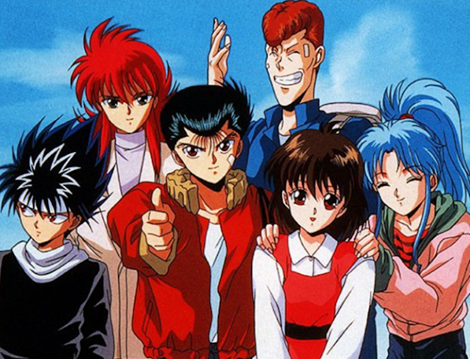 |
| 17.-Samurai X (Rurouni Kenshin) |
es un manga escrito e ilustrado por Nobuhiro Watsuki y cuya adaptación al anime fue dirigida por Kazuhiro Furuhashi. Ambientado en los primeros años de la era Meiji del Imperio del Japón, y también en los acontecimientos sucedidos en el tiempo Bakumatsu de la Dinastía Tokugawa. Su temática acerca de la paz, el amor y la redención ha impulsado su popularidad tanto en su país natal como internacionalmente. |
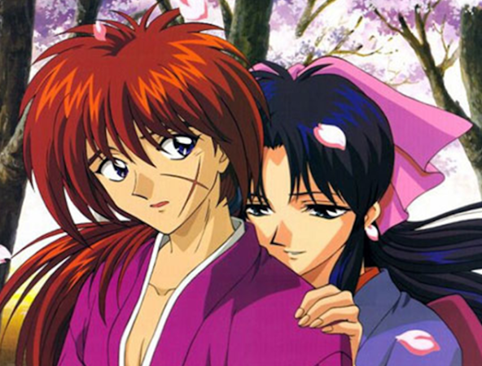 |
| 18.-Astroboy |
es una serie de manga escrita e ilustrada por Osamu Tezuka,3 y publicada desde 1952 a 1968. La historia sigue las aventuras de un androide llamado Astro Boy y una variada selección de otros personajes.4 El manga fue adaptado a una serie de televisión en 1963 —la cual fue dirigida por el mismo Tezuka—, convirtiéndose en la primera serie de televisión japonesa en hacerse popular en el extranjero y en introducir al mundo en la estética del anime. |
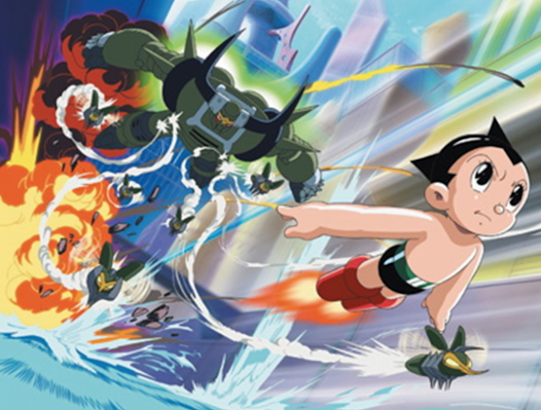 |
| 19.-Super campeones |
es una serie de manga escrita e ilustrada por Yōichi Takahashi en 1981. Una adaptación a serie de anime se desarrolló apenas dos años después del lanzamiento del manga, la cual tuvo gran éxito a nivel internacional, siendo emitida originalmente entre 1983 y 1986 por TV Tokyo y dirigida por Isamu Imakake. |
 |
| 20.-Super Dimensional Fortress Macross(Robotech) |
es una serie de animación para televisión desarrollada por el estudio Nue y transmitida en Japón durante los años 1982 y 1983, creada a partir de una idea original concebida por Shoji Kawamori.
Años más tarde esta serie fue usada por Carl Macek de Harmony Gold para crear la primera generación de Robotech (1985) |
 |
| 21.-Fairy Tail |
es un manga de aventura y fantasía escrito e ilustrado por Hiro Mashima, publicado por primera vez el 23 de agosto de 2006 en la revista Shōnen Magazine, de la editorial japonesa Kōdansha. |
 |
| 22.-Heidi |
La serie fue producida por el estudio de animación Zuiyo Eizo (actualmente, Nippon Animation) en conjunto con la cadena alemana Zweites Deutsches Fernsehen (ZDF).2 La serie, que consta de 52 episodios,3 se estrenó en España con un doblaje peninsular en 1975, encabezando el índice de aceptación de programas en 1976,4 y en Hispanoámerica en 1978, con un doblaje mexicano.5 |
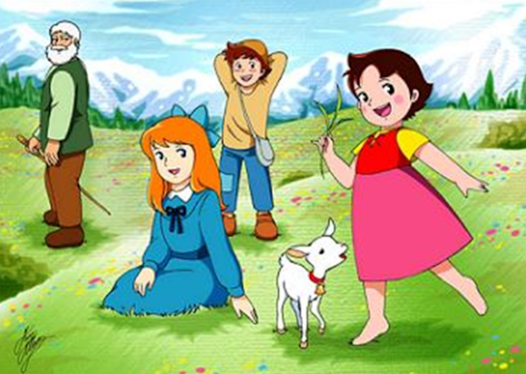 |
| 23.-La princesa caballero |
es una serie de manga escrita y dibujada por Osamu Tezuka. Trata las aventuras de una joven llamada Zafiro, la princesa del reino de Silverland, que debe hacerse pasar por chico para que el trono no caiga en manos del malvado Duque Duralmin. |
 |
| 24.-Fantasmagórico |
también conocido como Fantaman, en Italia; Fantasmagórico, en América Latina y en España, y Phantoma, en Australia y Estados Unidos, es un superhéroe japonés popular, creado por el escritor Takeo Nagamatsu, en 1930, personaje de una película y de un anime. |
 |
| 25.-Meteoro |
es una serie de anime japonesa sobre automovilismo basada en el manga original de Tatsuo Yoshida. Es conocida por la adaptación del título al español, Meteoro, y al inglés, Speed Racer. |
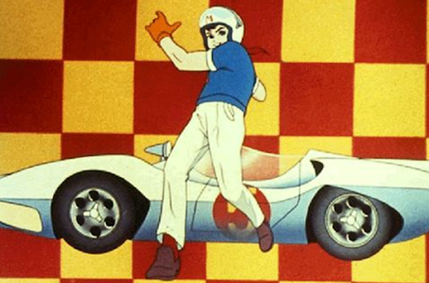 |
| 26.-Mahou Sensei Negima |
es un manga escrito e ilustrado por Ken Akamatsu. Se empezó a emitir una serie animada en Japón el 6 de enero de 2005. Mahō Sensei Negima! ha sido licenciado por Editores de Tebeos para su edición en España, y fue presentado en el Salón del Manga de Barcelona 2005 a finales de octubre. |
 |
| 27.-Sakura Card Captor |
El manga se publicó por primera vez en mayo de 1996 por la editorial Kōdansha, en la revista mensual japonesa de manga shōjo Nakayoshi, hasta que llegó a su final en junio de 2000 con el duodécimo volumen, recopilando cincuenta capítulos. |
 |
| 28.-Death Note |
es una serie de manga escrita por Tsugumi Ōba e ilustrada por Takeshi Obata, y cuya adaptación a serie de anime fue dirigida por Tetsurō Araki. Cuenta, además, con varias películas y videojuegos. La historia se centra en Light Yagami, un estudiante de escuela secundaria. |
 |
| 29.- Digimon |
Seguido del estreno de la primera película de Digimon a comienzos de 1999, en marzo Fuji TV comenzó a emitir la primera temporada de anime de esta saga, conocida como Digimon Adventure, a la cual sucedieron varias otras temporadas. |
 |
| 30.- Mazinger Z |
es una serie de manga y anime creada por el dibujante y guionista japonés Gō Nagai.4 En la ficción, Mazinger Z fue el primer robot gigante tripulado por un protagonista, marcando las bases del género mecha,1 que tomaría fuerza tras el éxito de esta franquicia. |
 |
| 31.-Shaman King |
es una serie de manga y anime creada por Hiroyuki Takei. El manga empezó su publicación en 1998 en la revista Shūkan Shōnen Jump por la editorial Shueisha, pero fue cancelada en 2004. |
 |
| 32.-Blood, the last vampire |
es una película de animación japonesa dirigida por Hiroyuki Kitakubo y producida por los estudios Production I.G y SPE Visual Works. Cuenta como secuela un manga con el mismo título de forma oficial y de forma alternativa ha habido varias series que han hecho su propia continuación respecto a la película, Blood+ y Blood-C. |
 |
| 33.-Detective Conan |
es una serie de manga atemporal y ocasionalmente anacrónica escrita e ilustrada por Gōshō Aoyama. La historia se centra en "Shinichi Kudo". |
 |
| 34.-Chobits |
es un manga creado por el colectivo CLAMP. Fue publicado por Kōdansha en la revista Young Magazine durante el febrero del 2001 al noviembre de 2002, recopilándose en ocho volúmenes. |
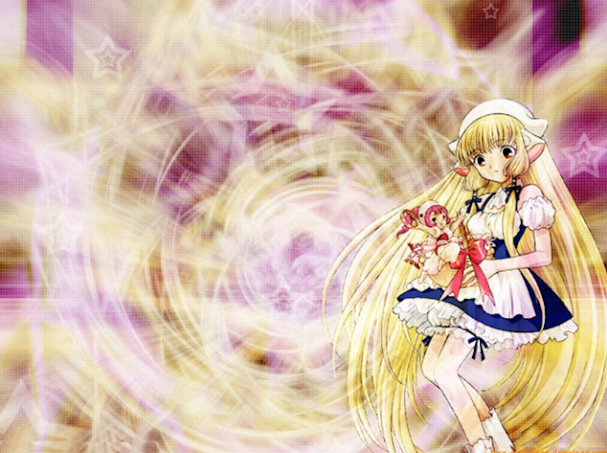 |
| 35.-Hamtaro |
es un manga obra de Ritsuko Kawai de 3 volúmenes publicados en 1997 por la editorial Shogakukan, del que se ha producido una serie anime en la que trabajó Gosho Aoyama diseñando los personajes humanos, también ha producido 4 OVAs, 4 películas, y algunos videojuegos. |
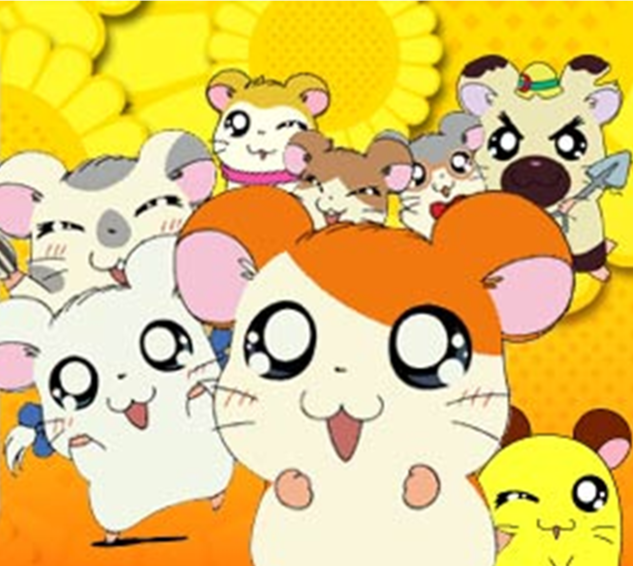 |
| 36.-Beyblade |
es un manga japonés escrito e ilustrado por Takao Aoki para promover las ventas de trompos llamadas "Beyblades". Serializado originalmente en Coro Coro Comic entre septiembre de 1999 julio de 2004, se recogieron los capítulos individuales y publicados en 14 tankōbon por Shogakukan. |
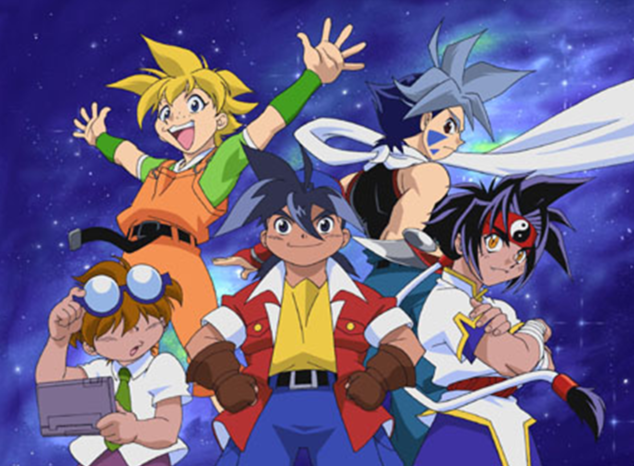 |
| 37.-Orphen |
es una serie de novelas ligeras japonesas creada por Yoshinobu Akita y dibujada por Yuuya Kusaka. Posteriormente, fue adaptado a una serie animada de televisión. |
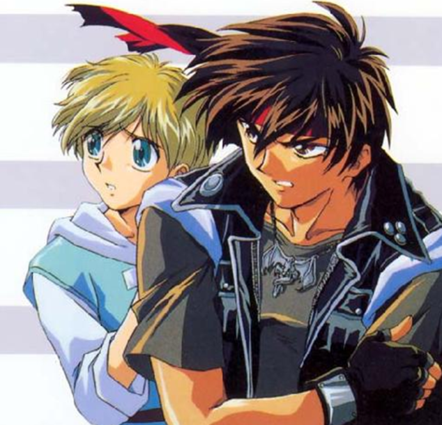 |
| 38.-Slam Dunk |
es un manga Shonen del género Spokon escrito e ilustrado por Takehiko Inoue. La trama sigue a Hanamichi Sakuragi, un estudiante de secundaria que decide practicar baloncesto para conquistar a Haruko Akagi, la chica de que está enamorado. |
 |
| 39.-Galaxy Angel |
es una franquicia bishōjo de ciencia ficción y comedia creada por Broccoli (los creadores de Di Gi Charat). El planteamiento y guion original son de Broccoli, y los diseños de personajes son de Kanan. |
 |
| 40.-Gundam |
es una franquicia de series animadas de ciencia ficción creadas por Yoshiyuki Tomino para los estudios Sunrise. La temática de las series son los conflictos bélicos entre humanos. En la serie, los bandos en guerra utilizan armaduras de combate llamadas Mobile Suits (MS). Por lo general, el Mobile Suit del protagonista es el que lleva el nombre de Gundam. |
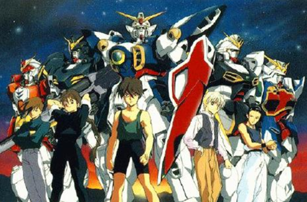 |
| 41.-Code Geass |
es una serie anime realizada por los estudios Sunrise. Fue dirigida por Goro Taniguchi y escrita por Ichirō Ōkouchi (ambos trabajaron juntos en otra serie de Sunrise, la aclamada Planetes); el diseño de los personajes estuvo a cargo del grupo CLAMP. |
 |
| 42.-Touch |
es el nombre de una de las series más conocidas del mangaka Mitsuru Adachi, autor de obras como Short Program, Alegre Juventud o la más reciente Cross Game. |
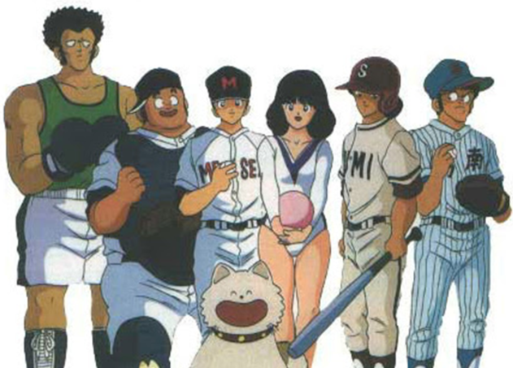 |
| 43.-Elfen Lied |
es una serie de manga escrita e ilustrada por Lynn Okamoto. Su adaptación a serie de anime fue dirigida por Mamoru Kanbe. Ambos formatos tratan sobre la especie de diclonius, una mutación del ser humano con cuernos, y su violenta relación con el resto de la humanidad. |
 |
| 44.-Lupin III |
es una serie manga creada e ilustrada por Monkey Punch y publicada por la revista japonesa Weekly Manga Action por primera vez el 10 de agosto de 1967.1 La historia relata las aventuras de una banda de ladrones liderada por Arsène Lupin III, el nieto de Arsenio Lupin, un caballero ladrón francés creado en las veintiuna novelas de Maurice Leblanc hasta 1941 |
 |
| 45.-Sazae-san |
es una serie de manga y anime japonés creada por Machiko Hasegawa. Fue publicada en el periódico local Fukunichi Shimbun el 22 de abril de 1946. Cuando Asahi Shimbun expresó anhelo para que Hasegawa dibujara la tira cómica, ella se mudó a Tokio en 1949, explicando así que los protagonistas también se mudaban de la sureña isla de Kyushu hacia la capital japonesa |
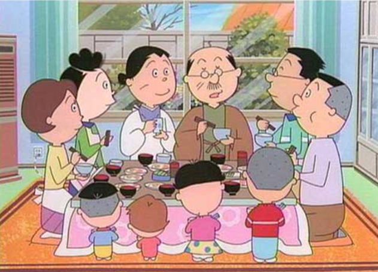 |
| 46.-Crayon Shin Chan |
es una serie de manga escrita e ilustrada por Yoshito Usui, con más de 148 millones de copias a nivel mundial, centrada en la vida de Shinnosuke Nohara, un niño de cinco años particularmente travieso. |
 |
| 47.-Pani Poni Dash! |
es una serie de manga escrita e ilustrada por Hekiru Hikawa. Comenzó su serialización en la revista Gekkan GFantasy de Square Enix en noviembre de 2000, y finalizó el 10 de octubre de 2011 con un total de 17 volúmenes tankōbon publicados. Una adaptación a anime fue estrenada en 2005 y cuenta con 26 episodios. |
 |
| 48.-Chibi Maruko-chan |
es una serie de manga escrita e ilustrada por Momoko Sakura. La serie narra la sencilla vida cotidiana de una niña apodada «Maruko» y de su familia en los suburbios japoneses a mediados de la década de 1970. |
 |
| 49.-Hellsing |
es una serie de manga escrita e ilustrada por Kōta Hirano que posteriormente tuvo su versión anime producida por Gonzo. Su primera edición fue en Young King OURs el 2 de mayo de 1997 y finalizó en a finales de 2008. |
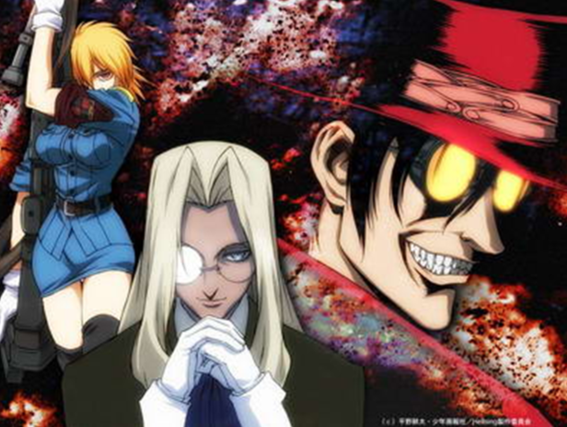 |
| 50.-Mahō Shōjo Madoka Magika |
es una serie de anime perteneciente al subgénero de mahō shōjo, producida por los estudios Shaft. Dirigida por Akiyuki Shinbo y escrita por Gen Urobuchi, cuenta con diseño de personajes de Ume Aoki y banda sonora de Yuki Kajiura |
 |